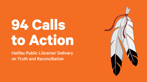
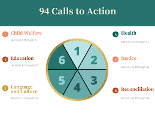

A solution would be that the government need to focus more on these 94 calls to action because they have not put a lot of time into them. And for the land rights and resource management, they should give back some of the land that the Indigenous people had before we stole it all from them.
68. Mark the 150th anniversary of Confederation with a funding program for commemoration projects on theme of reconciliation. Here is a quote I found about this call to action “We call upon the federal government to commit to making a funding contribution of $10 million over seven years to the National Centre for Truth and Reconciliation and to the Canadian Museums Association to update and maintain their online presence, and museums to develop, with Aboriginal peoples, a North American First Nations and Indigenous Peoples program that includes stories of our nation's history.
The problematic approach to reconciliation is the 94 Calls to Action have not been fully implemented. Land rights and resource management continue to be contentious issues. Indigenous communities often face challenges in asserting their rights to traditional lands, and there are ongoing disputes over resource extraction and development on Indigenous territories.
